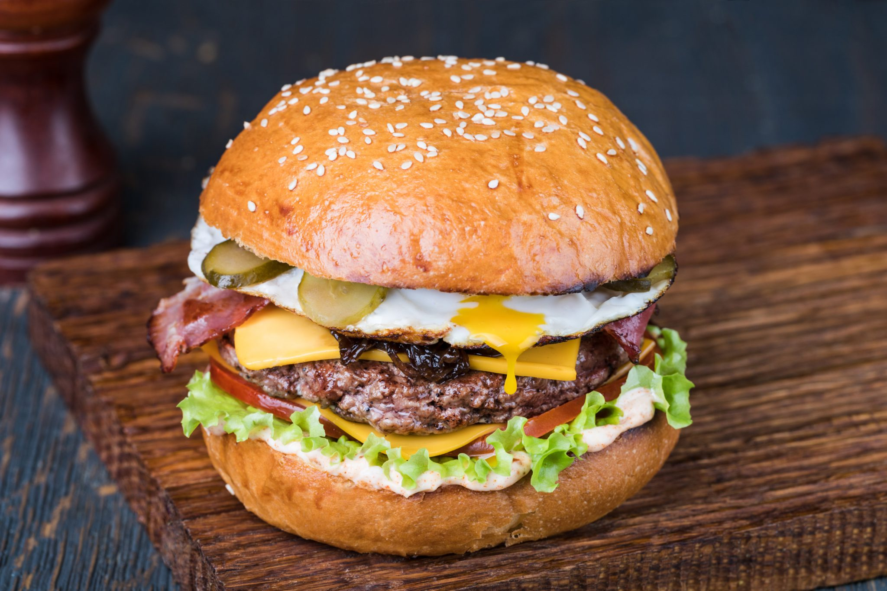

The "End" Burger
Welcome! The today's dish is The "End" Burger, WOW, just STELLAR

Pick your apron, and prepare your shopping list to the following igredients
- Hamburger buns cut open
- 8xLong Streaky Bacon Stripes
- Sesame
- Tomato Sauce
- Mustard
- 600 grams of minced beef or mixed minced meat
- 4 eggs
- 8 slices of cheddar cheese
- pickles a few leaves of lettuce, tomatoes in slices
Preparation:
- Preheat the oven to 200 degrees.
- Add the bacon for about 15 minutes or until it starts to curl and become crispy.
- Divide the minced meat into balls of 150 grams and shape them into hamburgers.
Make sure the hamburger is about 1 - 1.5 cm thick. Season well with salt and pepper.
- Place a frying pan over a high heat. Melt a knob of butter in this. Fry the burgers on both sides until they are well done.
- Keep the burgers warm by putting a lid on the pan.
- Break 4 eggs into a large pan so that you get four fried eggs. Season with salt and pepper.
- When the bacon is almost ready, place the hamburger buns in the oven with the flat side up. Let them brown slightly and then take them out.
- Assemble the burger: put a layer of cocktail sauce on the bottom half of the buns.
Top with a lettuce leaf, 2 tomato slices, a slice of cheddar cheese and then the burger.
- Place another slice of cheddar on the still warm burger.
- Then top with 2-3 bacon strips and a fried egg. Finish with a few pickle slices and season again with pepper.
- Cover with the top half of the rolls, ready to serve! Please, don't forget your sauces.